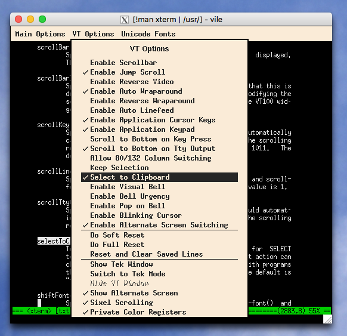

I have long heard about the fame and reputation of Arch Linux. But not until after I have commenced to explore on this distro did I really feel the enjoyness that Linux brings to me.
This article mainly aims to record the problems that I faced during my hunting journey as well as the solutions that are suitable to solve them. It is not going to just drop down every step that I followed, neither will it explains every concept and mechanism lying in those procedures, commands and scripts. Because the more detailed and thorough explanations can be easily found on ArchWiki and Web. What this article tries to do is to strip down my thoughts and to help to improve my and the readers’ understanding of Arch, of Linux, and hopefully, of Operating Systems. I just hope what I have written here would save my time if I face the similar problems again and help more people to save our precious time.
Preparation
The preparation process for those who ever installed some other Linux distribution versions is a comparatively easy job which may cause less problems. Note that UltraISO is not suggested for write Arch Linux installation image.
Installation media
How can I write image into flash disk?
After writing, you cannot find it by Windows or Linux file system. Keeping this in mind, don’t be worry.
1 | dd bs=4M if=Downloads/archlinux-2019.06.01-x86_64.iso of=/dev/sdx status=progress oflag=sync |
Network support
Some campus Wi-Fi need username and password to get Internet access, which is not supported by command-line Live system. For a cellphone, it have only one wireless card, so it cannot functioned as both the Wi-Fi user and the hotspot at the same time. If using a hotspot from cellphone, note that ping command may not be supported. An RJ45 wired connection without password is recommended because this is the easiest one. Remember that network connection is necessary.
How do I maintain the network connection which requires webpage user login for example a campus-net environment?
In this case, a hotspot generated by your cellphone mobile data is recommended, even though it is a little slow without a proxy.
How can I connect to an encrypted WiFi network by under archiso installing process?
The problem of connecting to network may be reappearing after OS is installed, so it’s better to understand as thorough as possible at the beginning. The connection process can be divided into three parts: first, setup interface; second, authentication from the router; third, get ip address.
Back to simply, set a non-encrypt wireless network and use wifi-menu for connecting. This tool belongs to netctl and will do first and second step for you. wifi-menu also supports WPA encrypted WiFi spot. However, nowadays WPA2 protocal has been widely used so several other tools can be selected to use archwiki-wireless-network-config. Take wpa_supplicant as an example:1
2
3ip link set wlp58s0 up # First step: Set Wlan interface up
wpa_supplicant -B -i wlp58s0 -c <(wpa_passphrase "Abc-104" "4001001225888" # Second step: Replace with your wifi name and pass
dhcpcd # Third step: to get a dynamic ip address
Note that you must use root user for manipulation rather than sudo.
Installation
The mainly installation process generally consists of these parts: 0. Accessing Internet 1. Partitioning the disk and formating; 2. Install base system on new arch and change root; 3. Adding boot config; 4. Windows manager and display manager 5. Reboot into new arch 6. System settings
Partitioning the disk
1 | fdisk -l |
Installing base system for new arch
1 | mount /dev/[partition where you install root hierachy /] /mnt # First mount it under /mnt |
Don’t worry if one or some packages were lost during the installation process. If that could happen, just reboot go back to live system and install and chroot to newly-installed system.
Adding boot config
1 | mkdir -p /mnt/boot/efi |
Windows desktop and display manager
bofore
Before choosing our willing destop, create a normal user for using graphical interfaces.1
2
3
4pacman -S vim xterm zsh sudo fakeroot # fakeroot is for aur makepkg
pacman -S dialog wpa_supplicant # wireless network support
useradd -G wheel -s /bin/zsh -m -c "WANG Shengdian" wsd
passwd wsd # ******
For window desktops, you can choose GNOME, KDE, or others.
You can use display managers(gdm for gnome and lightdm usually for kde) or not.
Here I give two suggestive configurations without display manager.
GNOME wayland
1 | pacman -S gnome-desktop gnome-control-center gnome-shell gnome-tweaks # or put simply, pacstrap /mnt gnome |
For startx wayland, add to .zshrc(because I set zsh as default shell):
if [[ -z $DISPLAY && $(tty) == /dev/tty1 && $XDG_SESSION_TYPE == tty ]]; then
MOZ_ENABLE_WAYLAND=1 QT_QPA_PLATFORM=wayland XDG_SESSION_TYPE=wayland exec dbus-run-session gnome-session
fi
If you choose gdm display manager(which some software like teamviewer requires):
pacman -Syu gdm
systemctl enable gdm
i3 startx
pacman -S xorg i3-wm i3status dmenu # install i3dm
pacman -S xorg-xinit # install startx
Add to ~/.zshrc:
if systemctl -q is-active graphical.target &&
[[ ! $DISPLAY && $XDG_VTNR -eq 1 ]]; then
exec startx
fi
Add ~/.xinitrc
[ -f /etc/xprofile ] && . /etc/xprofile
[ -f ~/.xprofile ] && . ~/.xprofile
...
exec i3
after
unified wireless network config
wpa_supplicant.conf1
2ctrl_interface=/run/wpa_supplicant
update_config=1
1 | systemctl enable wpa_supplicant@wlp58s0.service |
Reboot into new arch
1 | exit # exit chroot |
Then change boot option at start up.
System settings and loacalization
Edit host name: /etc/hostname
Edit known hosts: /etc/hosts
Locale: https://wiki.archlinux.org/index.php/Locale
Fonts: https://wiki.archlinux.org/index.php/Fonts#Manual_installation
Add archlinuxcn repository
cat into ‘/etc/pacman.conf’ with1
2
3/etc/pacman.conf
[archlinuxcn]
Server = https://mirrors.tuna.tsinghua.edu.cn/archlinuxcn/$arch
Then in terminal:1
sudo pacman -Syy && sudo pacman -S archlinuxcn-keyring
Note that Manjaro doesn’t have archlinuxcn support yet.
Q & A
Why I cannot find the disk file system when using fdisk -l
Analyse: I face this problem because I am using Dell XPS-13 with SDD. I should go into BIOS setup and change the integrated SATA hard drive controller from ‘RAID ON’ to ‘AHCI’. After that, reboot windows using diagonotics.
Add boot option for single-disk install
For my Dell-XPS13, type F12 to enter BIOS, then add a boot option fromx \EFI\arch\grubx64.efi
Restore the flash USB after installing process
Extra settings for dual system?
grub to replace windows EFI starter
how can I get write access to Windows NTFS filesystem?
Install the open source version of NTFS, i.e., ntfs-3g.
The proper way is to create a /mnt/win10 folder that is owned by your current user.
And then write the configuration in /etc/fstab likeUUID=FED8CDDDD8CD93F5 mnt/win10 ntfs-3g defaults 0 0
UUID can be found by blkid of root.
Q: why the times are incompatible?
Because windows just take the machine time as the time of current timezone. But Linux defaultly take it as UTC+0, and change to current timezone.
Solution:
Considering that modifying Windows settings is more complex, we change Linux settings by take machine time as the time of current timezone.
If I don’t use Windows OS for a while, it will go into Hibernate Mode. And when I open again, boot defaultly enter Arch Linux. Then I cannot edit files under Windows filesystem because they are in read-only state. How can I prevent this situation?
In Sleep Mode, the system won’t restart. So you need to change the power settings in control panel. Just go to advanced setting > Hibernate after this time > Never.
I think that will be fine.
Sharpening
Wireless network
Q&A: I suddenly has no internet access even IP address shows. I cannot ping gateway, why?
If you are using wps_supplicant, typing:1
sudo systemctl restart wpa_supplicant@wlp58s0.service
may solve it instantly.
A sample configuration file /etc/wpa_supplicant/wpa_supplicant-wlp58s0.conf1
2
3
4
5
6
7
8
9
10# Giving configuration update rights to wpa_cli
country=CN
ctrl_interface=/run/wpa_supplicant
ctrl_interface_group=wheel
update_config=1
network={
ssid = "name-WiFi"
psk = somethingafterhash
}
If you are using netctl, typing:1
2sudo netctl stop wlp58s0-USTB_Wi-Fi
sudo wifi-menu
The power saving strategy of iw may cause regularly wireless network down. To prevent this, set it off:
Q&A: Change from wpa_supplicant to netctl and vice versa?
example of changing from wpa_supplicant to netctl:1
2
3sudo systemctl stop wpa_supplicant@wlp58s0
sudo ip link set wlp58s0 down
ip a # Check if there is a ip addr residual
If there exists an ip addr not delete, use1
sudo ip addr del [IP address] dev [WIFI dev]
1 | sudo netctl start [your wifi profile] # Or sudo wifi-menu for the first time |
example of changing from netctl to wpa_supplicant:1
2sudo systemctl stop netctl@USTB_Wi-Fi
sudo systemctl start wpa_supplicant@wlp58s0
AUR
Before building an AUR package, ensure that base-devel is installed1
sudo pacman -S --needed base-devel
AUR through proxy
export all_proxy='http://127.0.0.1:1080'under user’s shell by editing ‘~/.zshrc’.- under root user,
visudo /etc/sudoers,Defaults env_keep += "all_proxy ftp_proxy http_proxy https_proxy no_proxy"to keep envs when sudo
Desktop: GNOME
Nautilus file manager
Drag-and-drop for move or copy?
Press Ctrl for Copy and Shift for Move.
Once I installed nautilus but it responsed very slowly.
So I use a terminal to open nautilus and I see lots of warnings like:
(nautilus:4258): Gtk-WARNING **: 17:34:12.268: Duplicate child name in GtkStack: …
Later I found this is because I had put too many files in ~/Templates, so I removed them and clear the cache1
2
3
4
5sudo rm -r ~/Templates/2，标准例程-HAL库版本
sudo rm -r ~/Templates/2，标准例程-库函数版本
sudo rm -r ~/Templates/mx-stm32f4
rm -rf ~/.cache/tracker # Clear nautilus cache
killall nautilus
and restart nautilus file manager, it’s ok.
Touchpad
For wayland, it’s ok.
For Xorg:1
2
3
4
5sudo pacman -Syu libinput-gestures
sudo gpasswd -a $USER input # Adding your user to group input
sudo cp /etc/libinput-gestures.conf ~/.config/
sudo chown $USER:$USER ~/.config/libinput-gestures.conf
libinput-gestures-setup autostart
Desktop: i3-wm
To prevent sleeping
/etc/systemd/logind.conf1
HandleLidSwitch ignore
append to ‘~/.xprofile’1
2
3xrandr --output eDP-1 --off # close laptop primary screen
xset s off -dpms
xset s noblank
Brightness of screen
for intel graphical driver, go into1
2
3# cd /sys/class/backlight/intel_backlight
# cat max_brightness
# echo 3000 > brightness
Check if it is ok. Then we will combine keys to modify it. Install1
sudo pacman -S xf86-video-intel
Before binding the kay, check the name of keys by xmodmap -pke, the edit:1
2bindsym XF86MonBrightnessUp exec xbacklight -inc 10 # increase screen brightness
bindsym XF86MonBrightnessDown exec xbacklight -dec 10 # decrease screen brightness
Sound card
1 | sudo pacman -Syu pulseaudio pulseaudio-alsa |
Bluetooth sounder
1 | sudo pacman -Syu bluez bluez-utils pulseaudio-bluetooth |
Then open the bluetooth control1
2
3
4
5
6
7bluetoothctl
[bluetooth]# power on
[bluetooth]# scan on
[bluetooth]# pair EC:49:BC:00:90:DE
[bluetooth]# paired-devices
Device EC:49:BC:00:90:DE SANSUI A38S
[bluetooth]# connect EC:49:BC:00:90:DE
Touchpad tap-to-click
1 | sudo touch /etc/X11/xorg.conf.d/90-touchpad.conf |
Add these lines1
2
3
4
5
6
7
8
9
10# 90-touchpad.conf
Section "InputClass"
Identifier "touchpad"
MatchIsTouchpad "on"
Driver "libinput"
Option "Tapping" "on"
Option "TappingButtonMap" "lmr"
Option "NaturalScrolling" "on"
Option "ScrollMethod" "twofinger"
EndSection
Note that TappingButtonMap lmr means one-finger tap for left click, two-finger tap for right click and three-finger tap for right click.
Wallpaper setting
Edit ‘~/.config/i3/config’1
2
3...
exec --no-startup-id feh --bg-scale /path/to/image.file
...
Desktop: KDE Plasma
install KDE
1 | pacman -S plasma # kde plasma desktop |
If you want to load KDE by startx, pacman -S xorg-xinit. And then add
if systemctl -q is-active graphical.target &&
[[ ! $DISPLAY && $XDG_VTNR -eq 1 ]]; then
exec startx
fi
to ~/.zshrc
And add to ‘~/.xinitrc’
exec startplasma-x11
Disable kde wallet whenever I started Chromium
Edit ~/.config/kwalletrc, and add1
2[Wallet]
Enabled=false
HDD trim
1 | sudo fstrim -a -v |
International language support
set locale: https://wiki.archlinux.org/index.php/Localization
install new fonts: https://wiki.archlinux.org/index.php/Fonts#Manual_installation
Change charset
1 | pacman -S enca |
However, this tool is not steady all the time. So a text editor or an editor plugin is suggestted.
Printer service
How can I print through the network HP printer?
- Install the Linux print service
pacman -S cups
In this step, you should check if this service is started after installation. You can typelocalhost:631to check. If cannot be opened, start the service bysystemctl enable org.cups.cupsdor/etc/rc.d/cups start
If there is still some problem, try add your current user to lp group1
sudo gpasswd -a [username] lp
Check your group by groups [username]
Install the HP Linux imaging and printing driver
pacman -S hplipFind the IP address of network printer, and run
sudo hp-setup -i [ip addr]
If it needs some authentification, enter username as root and provide root pass.
If the plugin is not successfully donwloaded by hp-setup program, then follow these steps:
Step 1: Go to https://www.openprinting.org/download/printdriver/auxfiles/HP/plugins.
Step 2: Download the plugin files (both ‘run’ and ‘run.asc’) for the hplip version that you are using. Then give them execute previlege by chmod +x.
Step 3: Re-run hp-setup -i. Choose to specify a path to the plugin and use the path to the ‘run’ file that you downloaded in step 2. It may give you some errors about gpg key checking, but install it anyway.
Step 4: In the final step, a test page should be printed.
Now you should have a working printer.
terminal console
z plugin for directory jump
grant sudo previlige to common user
Install sudo1
2cp /etc/sudoers /etc/sudoers.edit
visudo /etc/sudoers.edit
The file should be opened by default text editor. Mine is vim. Then uncomment the specification for wheel group because my user is already in wheel group.1
2visudo -c -f /etc/sudoers.edit # check
mv /etc/sudoers.edit /etc/sudoers
Xterm full screen
use ALT+ENTER.
Q: change the fonts of xterm
create a file ~/.Xresources, write the wildcard-form settings in it:1
2
3
4
5
6
7
8xterm*faceName:Consolas:antialias=True
xterm*faceNameDoublesize:Microsoft YaHei:antialias=True
xterm*faceSize: 12
xterm*renderFont: true
xterm*utf8: 2
xterm*utf8Title: true
xterm*titleModes: 2
xterm*selectToClipboard: true
Default color schemes:1
2
3
4
5
6
7
8
9
10
11
12
13
14xterm*fullscreen: true
xterm*background: White
xterm*foreground: Black
xterm*color0: Black
xterm*color1: Red
xterm*color2: Green
xterm*color3: Yellow
xterm*color4: CornflowerBlue
xterm*color5: Magenta
xterm*color6: Cyan
xterm*color7: White
xterm*colorBDMode: false
xterm*colorULMode: false
xterm*cursorColor: Red
background 太亮，换成淡粉灰色#FFFAF0（去白光蓝光）
color3 的yellow太亮（用在warning和字符串高亮匹配），背景中体现不出，改为深一些的黄#DAAA01
BDMode 是否关闭变色替换加粗，这里关闭以使用加粗模式
colorUL 超链接变色模式。用于Ctrl+R匹配命令。若关闭，则使用下划线显示匹配。也应该与背景和前景区分开，使用灰白：#7A8181
cusorColor改为深红
1 | xterm*background: #FFF5EE |
Then add [[ -f ~/.Xresources ]] && xrdb -merge ~/.Xresources to the file .xprofile. For the X-org based GNOME environment, it is ok now. But for the default GNOME 3 wayland based desktop environment, since it didn’t initialize and X11 configurations, we should use other ways for autostarting. Here I suggest to rename .xprofile as .autostart_scripts.
I found a way equivelent to audo starting every time logging in that is using xdg autostart files. After installing xdg-user-dirs I write a .desktop file under ‘~/.config/autostart/‘.1
2
3
4
5[Desktop Entry]
Type=Application
Name=XTerm settings under wayland
NoDisplay=true
Exec=/home/shane/.autostart_scripts
Note that the Exec item should be a fullpath filename and the relevant files including ~/.autostart_scripts are granted as user excutable permision(+x).
Xterm prevent Alt+B becoming strange symbol
1 | xterm*metaSendsEscape: true |
How can I copy and paste from xterm?
Understanding the concept of ‘PRIMARY’ and ‘CLIPBOARD’, the middle mouse key is served for PRIMARY buffer. If I want to select also for CLIPBOARD, just Ctrl+Mouse Middle Key, and then check ‘selection to clipboard’.

Just highlighting by draging(inside one screen) or right mouse key(long screen) will select them for copy, Shift+Insert or using the mouse middle key for paste.
Add a keyboard shortcut for xterm
Set in GNOME control center > Keyboard > Add shortcut > run uxterm by pressing ‘Alt + T’
Those common-used software?
v2ray
1 | v2ray -test -config=/etc/v2ray/config.json |
web browser
Chrome and Firefox are my choices. I suggest adding archlinuxcn Repository to install google-chrome-stable and firefox-esr.
text editor
I use vim-gnome and visual-studio-code-bin.
sudo cp /usr/share/applications/visual-studio-code.desktop ~/.local/share/applications
cd ~/.local/share/applications
sudo chown wsd:wsd visual-studio-code.desktop
vim visual-studio-code.desktop
Add proxy --proxy-server="http://127.0.0.1:1080" to Exec.
pdf viewer
Evince (better than Okluar)
Video player
VLC video viewer
System monitor
gnome-system-monitor
Screen cut
gnome-screenshot
Chinese input method
Sogou Pinyin is currently the best Chinese Method solution but it is not easy to install it correctly on Arch Linux. Though I give methods here, more efforts should be made when really practicing.
I’m using KDE, so my installation scripts are:1
2
3
4
5
6
7sudo pacman -Rns fcitx-im fcitx-configtool
rm -rf .config/fcitx
rm -rf .sogouinput
rm -rf .config/SogouPY*
sudo pacman -Syu fcitx-lilydjwg-git fcitx-sogoupinyin
# For KDE user: sudo pacman -S kcm-fcitx
# For GNOME user: pacman -S fcitx-configtool fcitx-qt5
If anything happened during inputing, don’t panic, use Ctrl + 5 to reload Input method.
or1
ibus ibus-libpinyin
to get a quicker access to Chinese input method.
Teamviewer
aur teamviewer on xorg
If showing the message Not ready. Please check your connection, then the service should be enabled1
systemctl start teamviewerd.service
Note that teamviewer(current version is Teamviewer 14) need lightdm or gdm supports, so startx ways doesn’t work.
WPS Office
Add archlinuxcn repository, then1
sudo pacman -Syu ttf-wps-fonts wps-office wps-office-mime wps-office-mui-zh-cn
Sometimes, wps office may not config input method properly. There are two ways to solve it:
For Zsh users Because wps binary files run /bin/bash, so you need to edit ~/.bash_profile and add:
export XMODIFIERS="@im=fcitx"
export GTK_IM_MODULE="fcitx"
export QT_IM_MODULE="fcitx"
For Bash users Normally for bash users, wps office can set input method well. But if that is not the case, you need to add some parameters for the executable file. Here I use fcitx on gnome. So I should replace add two lines to, for example, sudo vim /usr/bin/et:1
2export XMODIFIERS="@im=fcitx"
export GTK_IM_MODULE="fcitx"
It is just a temporary solution because every time wps-office-et is upgraded, /usr/bin/et will be rewritten to a default config. So it is suggest to enable a user-specific application by1
2
3
4sudo cp /usr/share/applications/wps-office-et.desktop ~/.local/share/applications
cd ~/.local/share/applications
sudo chown wsd:wsd wps-office-et.desktop
vim wps-office-et.desktop
wps-office-et.desktop1
Exec=$HOME/.local/bin/et %f
1 | sudo cp /usr/bin/et ~/.local/bin/ |
and add the two exports above.
Remote Windows desktop
1 | pacman -S xfreerdp |
Toggle Full screen: Ctrl + Alt + Enter
Link to lab server:1
xfreerdp /size:1920x1080 /network:LAN /u:wangshengdian /v:202.204.62.142
Or xfreerdp -g 1920x1080 -x 0x80 -u wangshengdian 202.204.62.142
Screenshot
gnome screenshot is very good to use. But if this is KDE, try a pretty command line tool called escrotum:1
sudo pacman -Syu binutils
then aur escrotum-git
Zip file generator and extractor
1 | sudo pacman -Syu 7zip |
For rar files:1
7z x filename.rar
For Windows zip file with GBK encoding, use python code in the following
1 | #!/usr/bin/env python2 |
Dictionary
Go to website http://download.huzheng.org/bigdict/ to download your demanding dictionary and enter root:1
2tar -xjvf a.tar.bz2
mv a /usr/share/stardict/dic
Then we install another pretty good front-end software called goldendict1
sudo pacman -Syu goldendict
If you are using Wayland rather than X11, goldendict might not go well. Use QT_QPA_PLATFORM=xcb to force X11 use.1
2
3sudo cp /usr/share/applications/goldendict.desktop ~/.local/share/applications
cd ~/.local/share/applications
sudo chown youruser:youruser goldendict.desktop
Replace Exec= line in goldendict.desktop with goldendict.desktop.
Refer to “goldendict” terminated by signal SIGSEGV (Address boundary error) and segfaults
and Arch Wiki Desktop entries
Generally, the dictionary will detected by it, if not, Edit -> Dictionaries -> Files, then add /usr/share/stardict/dic.
My experience after using digital dictionaries under WinOS basically includes some points of view. First, it’s of little difference if I am searching words with a web browser. Then I would like to tell some feelings of some WinOS dictionary software. Sure there are plenty of them under WinOS, but most of them carries some unwanted ads. Sometimes I just want the English meanings but they offer me Chinese meaning primarily and defaultly. Excluding those have the former two disadvantages, only Lingoes and OALED are left for choices. But a little unfortunately, Lingoes is huge-size and OALED3 is too old for Win10(its pixel rendering is bad). Under Linux, I can install a clean and small interface and just install the dictionary that I want(Here I mean Merriam-Webster). It’s a very pure experience.
Baidu Netdisk Downloader
1 | git clone https://github.com/acgotaku/BaiduExporter.git |
Open chrome browser > Extentions > Developper Mode > Load Unpacked > Open ./BaiduExporter/chrome/release/
Then login pan.baidu.com by your own account, open aria2c listening and click to download.
GNOME3: How can I automatically change the wallpaers which are selected from a folder?
It is not a big problem because the gnome community has offered a large amount of extensions. What you need to do is to find and then use them. Here, the GNOME extension Wallpaper Changer is suggested for you.
Understanding
pacman
To see what packages belong to the gnome group, run:1
pacman -Sg gnome
To install a package completely, use1
pacman -Rns [package_name]
where -R means remove the package, -n means not saving important configuration files, and -s means removing its dependencies which are note required by any other installed packages.
Within the firewall, the speed is limited by v4. So I suggest v6. The differences are really distinguishable.
- get a v6 address
- get a v6 vps
# export all_proxy='socks5://127.0.0.1:1080'# pacman -Syu
To retrieve a list of the files installed by a package, run:1
pacman -Ql package_name
To clear the cache of all uninstalled packages in /var/cache/pacman/pkg/1
pacman -Sc
Trouble shooting
:: Synchronizing package databases…
error: failed to update core (unable to lock database)
error: failed to update extra (unable to lock database)
…
error: failed to synchronize all databases
It might because another process is running pacman. Just take a coffee and wait for it ^_-
1 | [root@inspiron-7537 shane]# pacman -Syu |
Solve:1
rm /var/lib/pacman/db.lck
file confliction1
2
3sudo pacman -Syu
error: failed to commit transaction (conflicting files)
python-numpy: /usr/bin/f2py exists in filesystem
This happens because I use pip install numpy but some packages in my repository takes python-numpy as dependencies. This is a trivial problem, just remove by sudo pip3 uninstall numpy.
Dec 22nd 2019:
When running sudo pacman --noconfirm -Syu, I received an error:1
2
3error: failed to prepare transaction (could not satisfy dependencies)
:: installing xorgproto (2019.2-2) breaks dependency 'dmxproto' required by libdmx
:: installing xorgproto (2019.2-2) breaks dependency 'xf86dgaproto' required by libxxf86dga
This happens because libdmx requires dmxproto but updating will break this requirement chain, so that libdmx loses dependency.
To repair the bug, the easy way is manually removing libdmx and libxxf86dga, then upgrade.
But libdmx and libxxf86dga may be dependent under other upper level packages.
So we should use pacman -Rdd libdmx libxxf86dga && pacman -Syu.
References:
This video is also recommended: https://www.bilibili.com/video/av5462824/?redirectFrom=h5
Sometimes my wifi is off. when I ping my local router, the destination is unreachable.
Later I find the power_saving function of iw causes that. So I edit/etc/udev/rules.d/81-wifi-powersave.rules:
Reboot and found iwconfig off the power management.
几种 Linux 桌面的比较
使用 Gnome 缺点：
没法使用 KDE 下一些软件，比如视频剪辑软件 kdenlive
关于主题配置
很多人撸 Linux 酷爱折腾 macOS 主题。这里先给出结论：没法配置和 macOS 一模一样。
简简单单一个最大化就能看出端倪。
最大化后是否能隐藏掉 topbar，并新开一个workspace？最大化后是否有全局菜单？
事实上，macOS桌面的全局菜单很鸡肋，需要将鼠标频繁移动到桌面边缘。
mbp的触控板非常大，实际上对于绝大多数笔记本用户，触控板面积有限，频繁移动鼠标到边缘效率低，一些操作能用键盘最好，用鼠标也是最好集中在非屏幕边缘区域。
References
“goldendict” terminated by signal SIGSEGV (Address boundary error) and segfaults: https://github.com/goldendict/goldendict/issues/935
Arch Wiki Desktop Entries: https://wiki.archlinux.org/index.php/Desktop_entries#Modify_environment_variables